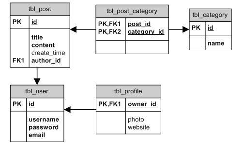
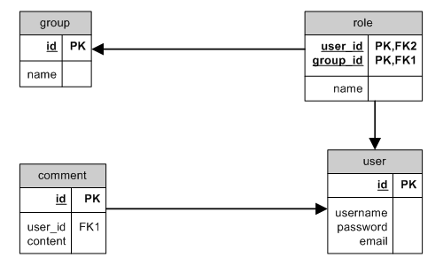
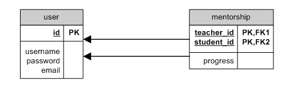
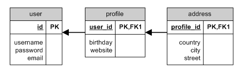

Yii Framework¶
Enlaces¶
- A probar cuando tenga un error :exclamation:
- Creating a dependent dropdown
- Search() & Filter of a relations field through CGridView
- Handling Related Models in Yii Forms
- Learning Yii Framework Series
- Yii for beginners
- How to Change datetime format displayed on the View
- Tabla Master Detail en Yii GridView de Yii Framework
- Dynamic parent and child CGridCiew on single view. Using $.ajax to update child gridview via controller (with MANY_MANY relation), after row in parent gridview was clicked
- Search CGridView, related tables, dates and datepicker
- Yii Framework en Español - Foro
- Multimodelform dropdown con Ajax Ejecutar acción en multimodelform con dropdown
- Usando Ajax en Yii, Facil
- Class Level Methods vs Static Methods
- Accessing data in a join table with the related models (tabla intermedia en relación many_many con información adicional)
- Selecting join table with mant to many? (tabla intermedia en relación many_many con información adicional)
- Special $variables in CGridView and CListView
- Custom Page Size for CGridView
- Using CButtonColumn to customize buttons in CGridView
- Understanding Virtual Attributes and get/set methods :exclamation:
- Using standard filters in CGridView custom fields
- Searching and sorting by related model in CGridView :exclamation:
- Reference: Model rules validation :exclamation:
- Displaying, sorting and filtering HasMany & ManyMany relations in CGridView :exclamation:
- Tutorial Yii Framework
- 1. INSTALANDO YII Y PRIMERA APLICACIÓN
- 2. CREANDO MODELOS Y CRUD A PARTIR DE UNA BASE DE DATOS
- 3. LENGUAJE Y VISTA POR DEFECTO
- 4. MODIFICANDO EL MENÚ
- 5. AUTENTICACIÓN DE USUARIOS
- 6. CLAVES FORÁNEAS EN VISTAS
- 7. VALIDANDO LOS FORMULARIOS
- 8. ORDEN POR DEFECTO Y CONDICION EXTRA EN GRID
- 9. FECHAS CON CJUIDATEPICKER
- 10. BÚSQUEDAS POR FECHAS CON SYDATECOLUMN
- 11. EXPORTAR DEL CGRIDVIEW A PDF
- 12. REPORTES A PARTIR DE UNA BÚSQUEDA EN EL GRID
- 13. COMBOS DEPENDIENTES
- 14. CAMPO CON AUTOCOMPLETAR
- 15. NO MOSTRAR INDEX.PHP EN LAS URL
- 16. GUARDAR AUTOMÁTICAMENTE USUARIO Y FECHA DE CREACIÓN Y MODIFICACIÓN
- 17. HACER FORMULARIO PARA MULTIPLES MODELOS
- 18. CAMPOS ENMASCARADOS EN FORMULARIO
Extensiones¶
- bootstrap: Bootstrap brings together Yii and Bootstrap, Twitter's HTML, CSS and JavaScript toolkit.
- eupdatedialog: EUpdateDialog is an extension for Yii framework that allows to run controller actions using jQuery UI dialog.
- multimodelform: This extension allows to work with multiple records and different models in a edit form.
- enexmo: ENexmo Library allows Yii programmers to use the Restful API offered by Mobile Messaging provider Nexmo.
- ejuitimepicker: This extension is a wrapper for Timepicker addon which adds a timepicker to jQuery UI Datepicker.
- datetimepicker: Datetime picker input widget, based on Jui-timepicker-addon.
- Envio email con Emailer
- A module to build dependents dropdown
- save-relations-ar-behavior: Save HasMany and ManyMany relational active records along with the main model.
Know How¶
Instalación¶
Apache¶
Para ocultar el script de inicio (index.php) de la URL se puede configurar un fichero .htaccess como sigue:
RewriteEngine on
# if a directory or a file exists, use it directly
RewriteCond %{REQUEST_FILENAME} !-f
RewriteCond %{REQUEST_FILENAME} !-d
# otherwise forward it to index.php
RewriteRule . index.php
Fundamentos¶
Development mode¶
En el fichero index.php el modo DEBUG se ajusta en la linea siguiente:
<?php
defined('YII_DEBUG') or define('YII_DEBUG',true);
Ponerlo a false en Producción (fuente).
El componente log admite como una de las rutas de log la clase CWebLogRoute que muestra un log detallado de la ejecución de la página en la parte inferior de la misma. Para activarlo incluir la clase en el array de routes del componente log, por ejemplo:
<?php
'log'=>array(
'class'=>'CLogRouter',
'routes'=>array(
array(
'class'=>'CFileLogRoute',
'levels'=>'error, warning',
),
array(
'class'=>'CWebLogRoute',
),
),
),
Cuando el desarrollo esté avanzado o al menos en una fase en la que no se esperen muchos cambios en el esquema de base de datos, se puede mejorar la velocidad del componente db dando un valor mayor que 0 a la propiedad CDbConnection::schemaCachingDuration (fuente).
Desactivar el módulo gii en el fichero de configuración cuando la aplicación esté en Producción.
Poner a false el parámetro enableParamLogging del componente db en el fichero de configuración de la aplicación.
Application¶
Si no se especifica, el controlador predeterminado de una aplicación se llama "site" (SiteController), pero se puede especificar así en el fichero de configuración de la aplicación (fuente):
<?php
array(
'defaultController'=>'site',
)
Los componentes de aplicación se activan por defecto si son definidos en el fichero de configuración de la aplicación, pero pueden ser desactivados asignando false al atributo enabled (fuente). Los componentes de aplicación se suelen incorporar de un paquete incluido con la instalación de Yii. La lista completa de componentes de aplicación de Yii puede consultarse aquí.
La aplicación genera un log en <AppRoot>/protected/runtime/application.log.
Controller¶
Si no se especifica la acción a ejecutar de un controller, se ejecuta la acción predeterminada que es index. Puede cambiarse ajustando la variable de instancia pública CController:defaultAction (fuente).
La ruta de los controllers es relativa al directorio <AppRoot>/protected/controllers (fuente).
Si la aplicación está organizada en módulos, la ruta completa de las acciones será del estilo moduleID/controllerID/actionID (fuente).
La instanciación de controllers sigue esta secuencia (fuente):
- Si se ha especificado
CWebApplication::catchAllRequest(se usa normalmente para poner la aplicación en modo mantenimiento). - Si el ID del controller se encuentra en el mapa definido en
CWebApplication::controllerMap. - Finalmente se utiliza la convención comentada anteriormente que enlaza el ID del controller con las clases del directorio
<AppRoot>/protected/controllers.
Las acciones se pueden escribir como clases autónomas en lugar de como métodos de un controller (fuente).
Los filtros se pueden definir como métodos de los controllers en cuyo caso deben empezar por filter o como clases independientes descendientes de CFilter (fuente).
Los filtros se pueden mapear en la función filters() de los controllers. Se pueden definir listas negras y listas blancas de acciones sobre las que se aplicará la lista de filtros (fuente).
View¶
La ruta de las vistas es relativa al directorio <AppRoot>/protected/views (fuente).
Dentro de las vistas se puede acceder al controller mediante $this. Adicionalmente se pueden pasar variables concretas desde el controller al invocar la vista de la siguiente manera:
<?php
$this->render('edit', array(
'var1'=>$value1,
'var2'=>$value2,
));
Por defecto se aplica a las vistas el layout definido en <AppRoot>/protected/views/layouts/main.php. Esto puede cambiarse a nivel de aplicación en CWebApplication::layout o a nivel de controller en CController::layout. Si se quiere renderizar una vista sin aplicar layout, en lugar del método CController::render() hay que invocar CController:renderPartial() (fuente).
Component¶
Los componentes se utilizan para encapsular funcionalidad. Soportan propiedades, eventos y behaviors. Estos últimos se utilizan para implementar herencia múltiple (fuente).
Module¶
Un módulo es una unidad de código autocontenida que engloba modelos, vistas, controllers y componentes. Es en cierto modo una aplicación, sólo que no puede ser desplegada por separado. Los módulos se pueden anidar en varios niveles. De la misma forma que una aplicación puede contener módulos, éstos pueden contener a su vez otros módulos. Se configuran de la misma forma con el fichero de configuración de la aplicación, indicando la propiedad modules en el módulo contenedor.
Path Alias e importación de clases¶
De forma predeterminada están definidos los siguientes path alias:
- system:
<YiiRoot>/framework - zii:
<YiiRoot>/framework/zii - application:
<AppRoot>/protected - webroot:
<AppRoot> - ext:
<AppRoot>/protected/extensions
Para importar clases mejor utilizar Yii:import('path_alias_de_la_clase') que el include, require o require_once de PHP (fuente). Se pueden importar todas las clases de un directorio en bloque con una orden del estilo Yii:import('path_alias_del_directorio.*'). Las clases del propio framework están pre-importadas, por lo que no es necesario hacerlo.
Convenciones¶
Del framework¶
- Si no se especifica en la URL el ID del action se ejecutará el action predeterminada. Si no se cambia (con
CController::defaultAction) se ejecutará el actionindex. - Si no se especifica en la URL el ID del controller se ejecutará el controller predeterminado. Si no se cambia (con
CWebApplication::defaultController) se ejecutará el controllersite.
Nomenclatura para código¶
- Utilizar notación camelCase.
- Comenzar las clases con una letra mayúscula. La letra
Cse usa en las clases del framework => Se recomienda utilizar otra (Tpor ejemplo). - Comenzar las variables privadas de clase con underscore.
- Terminar las clases controller con
Controller. - Dentro de una clase controller, los métodos de action comenzarlos con
action. - Terminar las clases de action con
Action.
Nomenclatura para bases de datos¶
- Nombres de tablas y campos en minúsculas.
- Palabras separadas con underscore (por ejemplo: direccion_cliente).
- Nombres de tablas en singular.
- Nombres de tablas con prefijo propio de la aplicación (por ejemplo: gestoo_clientes).
Formularios¶
Creando el Modelo¶
Validación¶
Las reglas de validación se definen en la función rules() del Model componiendo un array en el que cada elemento se define como sigue:
<?php
array('ListaAtributos', 'Validador', 'on'=>'ListaEscenarios', ...opciones adicionales)
donde ListaAtributos es una lista separada por comas de nombres de atributos del Model; Validador especifica el tipo de validación; el parámetro on es opcional y especifica la lista de escenarios en las que se aplica la regla; las opciones adicionales son pares clave-valor para inicializar propiedades de los validadores usados.
Hay tres tipos de validadores:
Validadorpuede ser el nombre de un método de la clase Modelo. El método tiene que tener la siguiente forma:
<?php
/**
* @param string $attribute the name of the attribute to be validated
* @param array $params options specified in the validation rule
*/
public function ValidatorName($attribute,$params) { ... }
Validadorpuede ser el nombre de una clase de validación. En este caso cuando la regla es aplicada, una instancia de la clase de validación se crea y se inicializa con las opciones adicionales. La clase de validación debe extender de CValidator.Validadorpuede ser una de las clases de validación predefinidas en Yii (lista).
Asignación de atributos¶
Las asignaciones de atributos entre formulario y modelo se pueden hacer en bloque por medio de la función de PHP $_POST[<clase_modelo>]. Sólo se asignan los atributos considerados seguros, es decir los que tienen asociada una regla de validación. Hay que tener en cuenta que las reglas de validación se pueden asociar a escenarios por lo que se asignarán unos atributos u otros según el escenario declarado al instanciar el modelo. Por ejemplo:
<?php
// en escenario login
$model=new User('login');
if(isset($_POST['User']))
$model->attributes=$_POST['User'];
// en escenario register
$model=new User('register');
if(isset($_POST['User']))
$model->attributes=$_POST['User'];
Es importante recordar que las reglas de validación se usan para chequear los datos introducidos por los usuarios y no los datos generados por código (timestamps o primary keys). Por lo tanto no hay que definir reglas de validación en los atributos que no esperamos que sean introducidos por el usuario. Por ejemplo, si marcamos como seguro el atributo id de un modelo (por medio del validador safe por ejemplo), aunque inicialmente no incluyamos el campo en el formulario, un atacante podría enviarlo y la asignación en bloque sobre el modelo lo incluiría y podría permitir cambiar el ID del registro en base de datos.
Provocando la validación¶
Una vez que el modelo recibe los atributos (normalmente procedentes del usuario por medio de un formulario) la validación se puede desencadenar invocando el método CModel::validate(). Retornará true o false en función del resultado. En los modelos tipo CActiveRecord de forma predeterminada se desencadena también al invocar el método save(). Antes de invocar la validación se puede indicar el escenario (ajustando la propiedad scenario del modelo) para elegir el conjunto de reglas de validación que se desean.
Una vez que la validación se ha hecho, los posibles errores se almacenan en el propio modelo. Se pueden obtener con las funciones CModel::getErrors() (devuelve todos los errores) y CModel::getError() (devuelve sólo el primero).
Recogiendo varios modelos a la vez¶
Para recoger varios modelos o registros de un tipo simultáneamente (o entrada tabular) necesitamos crear o rellenar un array de instancias del modelo, dependiendo de si queremos insertar o modificar registros. Luego recogeremos los datos de entrada del usuario de la variable $_POST y los asignaremos a cada modelo. Cuando recogíamos un solo modelo hacíamos $_POST[<clase_modelo>], ahora haremos $_POST[<clase_modelo>][$i]. El action de modificación tendrá el siguiente aspecto:
<?php
public function actionBatchUpdate() {
// retrieve items to be updated in a batch mode
// assuming each item is of model class 'Item'
$items=$this->getItemsToUpdate();
if(isset($_POST['Item'])) {
$valid=true;
foreach($items as $i=>$item) {
if(isset($_POST['Item'][$i]))
$item->attributes=$_POST['Item'][$i];
$valid=$item->validate() && $valid;
}
if($valid) // all items are valid
// ...do something here
}
// displays the view to collect tabular input
$this->render('batchUpdate',array('items'=>$items));
}
y la vista incluirá algo como:
<div class="form">
<?php echo CHtml::beginForm(); ?>
<table>
<tr><th>Name</th><th>Price</th><th>Count</th><th>Description</th></tr>
<?php foreach($items as $i=>$item): ?>
<tr>
<td><?php echo CHtml::activeTextField($item,"[$i]name"); ?></td>
<td><?php echo CHtml::activeTextField($item,"[$i]price"); ?></td>
<td><?php echo CHtml::activeTextField($item,"[$i]count"); ?></td>
<td><?php echo CHtml::activeTextArea($item,"[$i]description"); ?></td>
</tr>
<?php endforeach; ?>
</table>
<?php echo CHtml::submitButton('Save'); ?>
<?php echo CHtml::endForm(); ?>
</div><!-- form -->
Form Builder¶
Yii incluye un sistema de generación de formularios dinámico. Se basa en el objeto CForm. El uso se basa en crear el objeto, pasarle un array de configuración (se suele mantener en un fichero aparte) y renderizarlo desde una vista.
Si se definen formularios anidados (como se ve en la documentación), el formulario renderizado contendrá únicamente una etiqueta form HTML dentro de la cual los campos se identificarán con nombres tipo Model[atributo], donde Model se corresponderá con uno de los modelos asociados a uno de los sub-forms.
Cuando se utiliza el Form Builder la asignación de atributos del formulario al modelo se puede gestionar desde el propio objeto CForm. Para ello existe el método loadData(). Esta carga se hace automáticamente cuando es necesario, como por ejemplo si invocamos el método validate() de CForm que valida los modelos asociados.
Documentación completa aquí.
Base de Datos¶
Objetos DAO¶
El modelo de acceso a bases de datos de Yii se basa en los siguientes objetos:
- CDbConnection: Representa una conexión a una base de datos. Normalmente se configura como componente de la aplicación. Es interesante aprovechar la funcionalidad de prefijo de tablas por medio de la propiedad
CDbConnection::tablePrefix. Si se utiliza, luego en las consultas hay que indicar las tablas sin el prefijo (que queda configurado en esta propiedad) y entre dobles llaves (por ejemplo: {{usuario}}). - CDbCommand: Representa una sentencia SQL para ejecutar contra una base de datos. Se puede crear mediante el método
createCommand()del objeto CDbConnection. Se ejecuta con los métodosquery()para selects yexecute()para el resto.query()devuelve unCDbDataReader. Existen cuatro variantes dequery()que devuelven datos directamente:- queryAll(): Devuelve un array con todos los registros del resultado de la consulta.
- queryRow(): Devuelve el primer registro del resultado de la consulta.
- queryColumn(): Devuelve un array con el valor de la primera columna del resultado de la consulta.
- queryScalar(): Devuelve el primer campo del primer registro del resultado de la consulta. Útil para una consulta tipo count.
- CDbDataReader: Representa un conjunto de registros que se lee sólo hacia adelante resultado de una consulta. Normalmente el objeto se recorre ejecutando sucesivamente el método
read()hasta que devuelvefalse. A continuación se muestran tres formas de extraer los datos de CDbDataReader:<?php $dataReader=$command->query(); // calling read() repeatedly until it returns false while(($row=$dataReader->read())!==false) { ... } // using foreach to traverse through every row of data foreach($dataReader as $row) { ... } // retrieving all rows at once in a single array $rows=$dataReader->readAll(); - CDbTransaction: Representa una transacción en la base de datos. A continuación se muestra una estructura típica transaccional con este objeto:
<?php $transaction=$connection->beginTransaction(); try { $connection->createCommand($sql1)->execute(); $connection->createCommand($sql2)->execute(); //.... other SQL executions $transaction->commit(); } catch(Exception $e) { // an exception is raised if a query fails $transaction->rollBack(); }
Binding de parámetros¶
Para evitar ataques de inyección de SQL y para mejorar el rendimiento de consultas que se repiten habitualmente, se recomienda parametrizar las consultas con los métodos CDbCommand::bindParam() y CDbCommand::bindValue(). Ejemplo:
<?php
// una query con dos placeholders ":username" and ":email"
$sql="INSERT INTO tbl_user (username, email) VALUES(:username,:email)";
$command=$connection->createCommand($sql);
$command->bindParam(":username",$username,PDO::PARAM_STR); // reemplaza el placeholder ":username" con el valor de la variable $username
$command->bindParam(":email",$email,PDO::PARAM_STR); // reemplaza el placeholder ":email" con el valor de la variable $email
$command->execute();
// inserta otra fila con un nuevo conjunto de valores
$command->bindParam(":username",$username2,PDO::PARAM_STR);
$command->bindParam(":email",$email2,PDO::PARAM_STR);
$command->execute();
Binding de variables¶
Se pueden asociar variables PHP a columnas de una query de manera que tomen valor automáticamente cada vez que leamos el siguiente registro. Por ejemplo:
<?php
$sql="SELECT username, email FROM tbl_user";
$dataReader=$connection->createCommand($sql)->query();
$dataReader->bindColumn(1,$username); // asocia la primera columna (username) con la variable $username
$dataReader->bindColumn(2,$email); // asocia la segunda columna (email) con la variable $email
while($dataReader->read()!==false)
{
// $username y $email contienen los valores correspondientes a la fila en curso
}
Query Builder¶
Existe un conjunto de herramientas para construir sentencias SQL de una manera orientada a objeto. Como ventajas, permite construir sentencias de forma programática, evita problemas de sintaxis o ambigüedades, previene ataques de inyección de SQL al usar binding de parámetros y ofrece abstracción de base de datos lo que facilitaría una migración más adelante.
Consultar la documentación completa aquí.
Active Record¶
Active Record (AR) es una popular técnica de mapeo Objeto-Relacional (ORM) que permite manipular una tabla de manera orientada a objeto. De forma dinámica se genera una entidad modelo a partir de una tabla con prácticamente nada de código. Se recomienda que todos los nombres de los campos de las tablas estén en minúsculas para no tener problemas con el cambio de gestor de base de datos, ya que algunos son sensibles a mayúsculas y otros no.
Creando registros¶
Simplemente creando un objeto AR, asignando valores a sus propiedades y llamando al método CActiveRecord::save().
Para asignar expresiones SQL a algunos de los campos o propiedades de los objetos AR, hay que utilizar el objero CDbExpression, por ejemplo:
<?php
$post=new Post;
$post->create_time=new CDbExpression('NOW()'); // $post->create_time='NOW()'; no funcionaría porque 'NOW()' sería tratado como cadena
$post->save();
Recuperando registros¶
Para recuperar un solo registro tenemos los métodos:
<?php
$post=Post::model()->find($condition,$params); // encuentra la primera fila que satisface la condición especificada
$post=Post::model()->findByPk($postID,$condition,$params); // encuentra la fila con el primary key especificado
$post=Post::model()->findByAttributes($attributes,$condition,$params); // encuentra la fila con los valores de los atributos especificados
$post=Post::model()->findBySql($sql,$params); // encuentra la primera fila usando la SQL especificada
Si no se encuentra ningún registro, el resultado será null.
Para recuperar varios registros tenemos los métodos:
<?php
$posts=Post::model()->findAll($condition,$params); // encuentra todas las filas que satisfacen la condición especificada
$posts=Post::model()->findAllByPk($postIDs,$condition,$params); // encuentra todas las filas con el primary key especificado
$posts=Post::model()->findAllByAttributes($attributes,$condition,$params); // encuentra todas las filas con los valores de los atributos especificados
$posts=Post::model()->findAllBySql($sql,$params); // encuentra todas las filas usando la SQL especificada
Adicionalmente existen los siguientes métodos:
<?php
$n=Post::model()->count($condition,$params); // obtiene el número de filas que satisfacen la condición especificada
$n=Post::model()->countBySql($sql,$params); // obtiene el número de filas que se obtendrían con las SQL especificada
$exists=Post::model()->exists($condition,$params); // comprueba si existe al menos una fila que satisface la condición especificada
En todos los casos, en lugar de la pareja de strings $condition y $params, podemos entregar un objeto de tipo CDbCriteria más cosas además de una cláusula WHERE. Alternativamente a pasar un CDbCriteria podemos pasar un array con las propiedades de permitan construir este objeto dinámicamente.
Actualizando registros¶
Modificando un AR recién obtenido y guardando se producirá una actualización en base de datos:
<?php
$post=Post::model()->findByPk(10);
$post->title='new post title';
$post->save(); // guarda el cambio en la base de datos
Cuando se guarda (método save()) se invoca automáticamente la validación (a no ser que se pase el argumento false).
Si el registro es nuevo se hará un insert en lugar de un update. Se puede interrogar al modelo si estamos en uno u otro caso por medio del método CActiveRecord::isNewRecord().
Se puede actualizar un AR que no se haya cargado previamente con los siguientes métodos:
<?php
Post::model()->updateAll($attributes,$condition,$params); // actualiza las filas que satisfacen la condición especificada
Post::model()->updateByPk($pk,$attributes,$condition,$params); // actualiza las filas que satisfacen la condición y la primary key especificadas
Post::model()->updateCounters($counters,$condition,$params); // actualiza las columnas tipo counter en las filas que satisfacen la condición especificada
Borrando registros¶
Para borrar un solo registro utilizar el método delete() sobre una instancia AR obtenida previamente:
<?php
$post=Post::model()->findByPk(10); // localizamos el registro
$post->delete(); // lo borramos. El objeto $post seguirá existiendo, pero el registro en base de datos no
También se pueden borrar registros sin cargarlos previamente con los siguientes métodos:
<?php
Post::model()->deleteAll($condition,$params); // borra las filas que se ajusten a la condición especificada
Post::model()->deleteByPk($pk,$condition,$params); // borra las filas que se ajusten a la condición especificada y a la primary key
Comparando registros¶
Usar el método CActiveRecord::equals().
Adaptación de datos¶
CActiveRecord proporciona los siguientes métodos para adaptar los datos que se intercambian entre modelo y base de datos en uno y otro sentido:
- beforeValidate y afterValidate: invocados antes y después de que se efectúe la validación.
- beforeSave y afterSave: invocados antes y después de que se guarde una instancia AR.
- beforeDelete y afterDelete: invocados antes y después de que se borre una instancia AR.
- afterConstruct: invocado en cada instancia AR creada con el operador
new. - beforeFind: invocado antes de que un método de búsqueda de AR se use para efectuar una consulta (por ejemplo find(), findAll()).
- afterFind: invocado después de que cada instancia AR es creada como resultado de una búsqueda.
Usando transacciones¶
Cada instancia AR contiene una propiedad llamada dbConnection que soporta transacciones de la siguiente forma:
<?php
$model=Post::model();
$transaction=$model->dbConnection->beginTransaction();
try {
// find y save son dos pasos entre los que puede interferir otra petición
// encerraremos el intervalo entre ambas órdenes en una transacción para asegurar consistencia e integridad
$post=$model->findByPk(10);
$post->title='new post title';
$post->save();
$transaction->commit();
}
catch(Exception $e) {
$transaction->rollBack();
}
Named scopes¶
Un named scope representa un criterio de búsqueda al que le asignamos un nombre y que puede ser combinado con otros named scopes para refinar una búsqueda de AR's. Se declaran en el método CActiveRecord::scopes() como pares nombre-criterio de filtrado. Por ejemplo:
<?php
class Post extends CActiveRecord {
//......
public function scopes() {
return array(
'published'=>array(
'condition'=>'status=1',
),
'recently'=>array(
'order'=>'create_time DESC',
'limit'=>5,
),
);
}
}
La declaración de cada named scope se corresponde con un array que sirve para inicializar un objeto CDbCriteria. Una vez definidos se pueden combinar en las sentencias de búsqueda como por ejemplo:
<?php
$posts=Post::model()->published()->recently()->findAll();
Deben usarse siempre sobre métodos class-level, es decir partiendo de ModelName::model()->, no directamente de ModelName::. Si se quieren parametrizar hay que definirlos como métodos class-level autónomos en lugar de configurarlos en el array de CActiveRecord::scopes. Por ejemplo para parametrizar el named scope recently definido previamente se haría:
<?php
public function recently($limit=5) {
$this->getDbCriteria()->mergeWith(array(
'order'=>'create_time DESC',
'limit'=>$limit,
));
return $this;
}
Luego podríamos llamar:
<?php
$posts=Post::model()->published()->recently(3)->findAll();
Se puede definir un named scope predeterminado. De esta forma será aplicado automáticamente en todas las consultas. Para ello se define en el método CActiveRecord::defaultScope sin darle nombre como sí había que hacer en CActiveRecord::scopes. Por ejemplo:
<?php
public function defaultScope() {
return array(
'condition'=>"language='".Yii::app()->language."'",
);
}
ActiveRecord relacional¶
Declaración de relaciones¶
Para ilustrar los ejemplos de esta sección se utilizará el siguiente modelo de datos: 
Las relaciones entre dos clases AR tienen que ver con la relación entre las tablas en base de datos. En base de datos tendremos las relaciones:
- one-to-many: entre tbl_user y tbl_post por ejemplo.
- ono-to-one: entre tbl_user y tbl_profile por ejemplo.
- many-to-many: entre tbl_category y tbl_post por ejemplo.
En el lado AR hay cuatro tipos posibles:
- BELONGS_TO: Si la relación entre las tablas A y B es one-to-many, entonces B belongs_to A. En el ejemplo A=tbl_user y B=tbl_post.
- HAS_MANY: Si la relación entre las tablas A y B es one-to-many, entonces A has_many B. En el ejemplo A=tbl_user y B=tbl_post.
- HAS_ONE: Si la relación entre las tablas A y B es ono-to-one. Es un caso especial de HAS_MANY en el que A tiene al menos un B. En el ejemplo A=tbl_user y B=tbl_profile.
- MANY_MANY: Si la relación entre las tablas A y B es many-to-many. Se necesita una tabla intermedia que descomponga la relación en dos relaciones 1:n con la tabla intermedia (C). En el ejemplo A=tbl_post, B=tbl_category y C=tbl_post_category.
Estas relaciones se declaran en el método CActiveRecord::relations() definiendo un array en el que cada elemento representa una relación de la siguiente forma:
<?php
'VarName'=>array('RelationType', 'ClassName', 'ForeignKey', ...opciones adicionales)
donde VarName es el nombre de la relación, RelationType indica el tipo de relación (se pueden aprovechar las siguientes constantes: self::BELONGS_TO, self::HAS_ONE, self::HAS_MANY y self::MANY_MANY), ClassName es el nombre de la clase AR con que se está estableciendo la relación y ForeignKey indica la foreign key implicada en la relación. Las opciones adicionales se explicarán en la sección Opciones de consultas relacionales.
A continuación se definen las relaciones en los modelos User y Post:
<?php
class Post extends CActiveRecord {
//......
public function relations() {
return array(
'author'=>array(self::BELONGS_TO, 'User', 'author_id'),
'categories'=>array(self::MANY_MANY, 'Category',
'tbl_post_category(post_id, category_id)'),
);
}
}
class User extends CActiveRecord {
//......
public function relations() {
return array(
'posts'=>array(self::HAS_MANY, 'Post', 'author_id'),
'profile'=>array(self::HAS_ONE, 'Profile', 'owner_id'),
);
}
}
Consultas relacionales¶
Por defecto se aplica el sistema lazy loading en los campos de un modelo que se refieren a una relación. Para forzar un eager loading hay que preceder los métodos de búsqueda con el método with(). Por ejemplo:
<?php
$posts=Post::model()->with('author')->findAll();
Se pueden especificar varios nombres de relaciones separados por comas en el método with() o pasarle un CDbCriteria::with al método de búsqueda. Por ejemplo:
<?php
$criteria=new CDbCriteria;
$criteria->with=array(
'author.profile',
'author.posts',
'categories',
);
$posts=Post::model()->findAll($criteria);
Consultas relacionales sin obtener los modelos relacionados¶
En ocasiones nos interesa hacer una consulta usando una relación pero no queremos los datos de los propios modelos relacionados. Por ejemplo si quisiéramos los usuarios que tienen post's en estado published=1, pero no los post's en sí, podríamos hacer lo siguiente:
<?php
$users=User::model()->with(array(
'posts'=>array(
'select'=>false,
'joinType'=>'INNER JOIN',
'condition'=>'posts.published=1',
),
))->findAll();
Opciones de consultas relacionales¶
Las opciones adicionales que se pueden indicar cuando se definen las relaciones que se mencionaban en el apartado Declaración de relaciones son las siguientes (consultar su funcionamiento en la documentación oficial):
- select
- condition
- params
- on
- order
- with
- joinType
- alias
- together
- join
- group
- having
- index
- scopes
Adicionalmente las siguientes opciones están disponibles para ciertas relaciones durante el lazy loading (consultar su funcionamiento en la documentación oficial):
- limit
- offset
- through
Ejemplo de uso:
<?php
class User extends CActiveRecord {
public function relations() {
return array(
'posts'=>array(self::HAS_MANY, 'Post', 'author_id',
'order'=>'posts.create_time DESC',
'with'=>'categories'),
'profile'=>array(self::HAS_ONE, 'Profile', 'owner_id'),
);
}
}
Desambiguación de columnas¶
En una consulta relacional con AR, el alias para la tabla primaria es t, mientras que el alias de la tabla relacionada se corresponde con el nombre de la relación. Por ejemplo:
<?php
$posts=Post::model()->with('comments')->findAll(array(
'order'=>'t.create_time, comments.create_time'
));
Opciones dinámicas en consultas relacionales¶
Se pueden sobreescribir las opciones que se definen en las relaciones indicando otras mediante el método with() o con la opción adicional with.
Rendimiento de consultas relacionales¶
Existe una opción que permite elegir entre dos métodos para realizar consultas eager loading. Se trata de la opción together que determina si se realizará una única consulta con el join de las tablas relacionadas (más rendimiento) o una consulta por cada tabla (menos información redundante). Consultar documentación completa.
Consulta estadística¶
Existe un tipo de relación especializado en obtener datos estadísticos entre tablas. Sólo se puede aplicar sobre tablas relacionadas con HAS_MANY y MANY_MANY y el tipo de relación se designa con self::STAT. Por ejemplo:
<?php
class Post extends CActiveRecord {
public function relations() {
return array(
'commentCount'=>array(self::STAT, 'Comment', 'post_id'),
'categoryCount'=>array(
self::STAT, 'Category', 'post_category(post_id, category_id)'
),
);
}
}
Por defecto la consulta estadística consistirá en un COUNT, pero podemos realizar ajustes con las siguientes opciones adicionales al definir la relación:
select: la expresión estadística. Por defecto esCOUNT(*), lo que realiza un conteo de los objetos hijos.defaultValue: el valor que se asignará a los registros que no reciban un resultado de la consulta estadística. Por ejemplo, si un post no tiene comentarios,commentCountrecibirá este valor. Por defecto vale 0.condition: la cláusula WHERE. Su valor por defecto es vacío.params: los parámetros a asociar a la sentencia SQL generada. Debe ser un array de parejas clave-valor.order: la cláusula ORDER. Su valor por defecto es vacío.group: la cláusula GROUP BY. Su valor por defecto es vacío.having: la cláusula HAVING. Su valor por defecto es vacío.
Consulta relacional con named scopes¶
Se pueden combinar las consultas relacionales con los named scopes aplicando estos últimos tanto sobre la tabla principal como sobre las relacionadas. En el primer caso se haría combinando named scopes y consulta relacional en cadena de la siguiente forma:
<?php
$posts=Post::model()->published()->recently()->with('comments')->findAll();
Aplicar named scopes a los modelos relacionados se hace indicandolos detrás de la relación separándolos con ":". Por ejemplo:
<?php
$posts=Post::model()->with('comments:recently:approved')->findAll();
Los named scopes pueden forzarse en la propia declaración de la relación del siguiente modo:
<?php
class User extends CActiveRecord {
public function relations() {
return array(
'posts'=>array(self::HAS_MANY, 'Post', 'author_id',
'with'=>'comments:approved'),
);
}
}
Si los named scopes del objeto relacionados admiten parámetros, pueden pasarse en la consulta relacional de la siguiente forma:
<?php
$users=User::model()->findAll(array(
'with'=>array(
'posts'=>array(
'scopes'=>array(
'rated'=>5,
),
),
),
));
Consulta relacional con through¶
Se definen así:
<?php
'comments'=>array(self::HAS_MANY,'Comment',array('key1'=>'key2'),'through'=>'posts')
donde en array('key1'=>'key2'):
- key1 es una clave definida en la relación especificada en
through(postsen este caso) - key2 es una clave definida en el modelo al que esta relación apunta (
Commenten este caso)
through puede utilizarse en relaciones HAS_ONE y HAS_MANY.
Para ilustrar el caso HAS_MANY se utilizará el siguiente modelo de datos: 
Por ejemplo, para obtener los usuarios de un grupo en concreto:
<?php
class Group extends CActiveRecord {
//...
public function relations() {
return array(
'roles'=>array(self::HAS_MANY, 'Role', 'group_id'),
'users'=>array(self::HAS_MANY, 'User', array('user_id'=>'id'), 'through'=>'roles'
),
);
}
}
Un caso más complicado sería obtener todos los comentarios de todos los usuarios de un grupo en concreto. Se lograría añadiendo a las relaciones anteriores la siguiente:
<?php
'comments'=>array(
self::HAS_MANY, 'Comment', array('id'=>'user_id'), 'through'=>'users'
),
Una variante del HAS_MANY through es cuando el modelo origen y destino es el mismo. Por ejemplo, dado el siguiente modelo de datos:

Podríamos definir las siguientes relaciones:
<?php
class User extends CActiveRecord {
//...
public function relations() {
return array(
'mentorships'=>array(
self::HAS_MANY,'Mentorship','teacher_id','joinType'=>'INNER JOIN'
),
'students'=>array(
self::HAS_MANY,'User',array('student_id'=>'id'),
'through'=>'mentorships','joinType'=>'INNER JOIN'
),
);
}
}
De manera que podríamos obtener los alumnos que son enseñados por un profesor (alumnos y profesor son ambos usuarios):
<?php
$teacher=User::model()->findByPk(1);
$students=$teacher->students;
Para ilustrar el caso de HAS_ONE through nos basaremos en:

Por ejemplo, obtener la dirección de un usuario cuando ésta está relacionada con el usuario por medio de un profile:
<?php
class User extends CActiveRecord {
//...
public function relations() {
return array(
'profile'=>array(self::HAS_ONE, 'Profile', 'user_id'),
'address'=>array(self::HAS_ONE, 'Address', array('id'=>'profile_id'), 'through'=>'profile'
),
);
}
}
Tabla de relación MANY_MANY con datos adicionales¶
Para el caso en que la tabla intermedia que desarrolla una relación MANY_MANY entre otras dos tablas contenga campos con información adicional a los dos foreign keys que apuntan a las dos tablas, seguir este artículo del wiki y éste del foro (ignorar las respuestas más viejas que son de cuando no existía el mecanismo through).
Cosas interesantes¶
Application Singleton¶
Yii:app() Sirve como almacén central de ajustes de configuración a nivel de aplicación (fuente).
Añadir jQuery¶
Añadir jQuery a una página. Código visto en un action, pero también se podría insertar directamente en la vista en que vaya a ser necesario:
<?php
// Adding jQuery to the view page.
Yii::app()->getClientScript()->registerCoreScript('jquery');
Filtrado referido en BootGridView o CGridView¶
Imaginemos el modelo empleado asociado en n:1 al modelo departamento. En el listado de empleados queremos mostrar el departamento al que pertenece y poder filtrar por el nombre del mismo (no por el ID de departamento como ocurriría si indicáramos el campo departamento_id que pertenece a empleado). Ver ejemplo en el filtrado del campo xproduct.product en admin.php del modelo Product en R135 del repositorio svn+ssh://edumoreno@192.168.2.250/var/lib/subversion/gestoo/trunk.